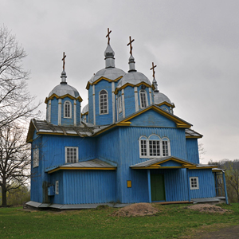

| Кам'яні церкви |
| Свято-Троїцький храм | Навпроти Кам’яниці у маленькій алеї гостинно розмістився бронзовий пам’ятник засновнику міста князю Ярославу Мудрому. На гранітному постаменті відтворений орнамент саркофага Ярослава Мудрого, що зберігається в Софії Київській. Скульптура бронзова, висота - 2,6 м. Пам'ятник встановлено у 2009 р. | | м. Богуслав, вул. Пилипа Орлика, 6 |
| Церква Святого Миколи Чудотворця | Пам'ятка архітектури національного значення. Церква побудована (відновлена) на місці старовинної козацької Миколаївської церкви у 2002 р. Дерев'яна церква Св. Миколая у стилі класицизму була побудована в 1758 р. Новий храм збудований у стилі українського необароко. На території святині є три прадавні могили, що свідчить про вік та сакральне значення цього місця | | с. Чайки |
| Свято-Михайлівський храм | Під час Другої світової війни старий храм (XVIII ст.) був зруйнований прямим попаданням снаряда. У 1997 році церковній громаді передано приміщення господарського магазину, яке добудоване жителями села і має вигляд типового православного храму | | с. Ісайки |
| Свято-Миколаївський храм | Перші відомості про медвинську парафію Миколи Чудотворця сягають 1726 року. У 1874 році церква добудована та оновлена. Перед початком Другої світової війни храм зачинили, а відкрили у 1950 р. 12 листопада 2011 року відбулося відкриття оновленого храму, який можна назвати справжньою окрасою села | | с. Медвин, вул. Миколія |
| Спасо–Преображенський храм | Побудований 2003 р. Вперше Преображеньска церква з'явилась у Мисайлівці ще у 1705 р. | | с. Мисайлівка |
| Свято-Троїцький храм | Вперше Свято-Троїцький храм був побудований у 1761 році. Новий кам'яний храм звели у 2006 р., а 2014 р. був проведений капітальний ремонт будівлі | | с. Яцюки |
| Свято-Миколаївський храм | Дерев’яна Свято-Миколаївська церква була зведена у 1799 р. З 1936 по 1991 рік в Закутинцях не було церкви. Новий храм був збудований у 1994 р. | | с. Закутинці |
| Дерев'яні церкви |
| Свято-Покровський храм | Пам'ятка архітектури національного значення. Побудований у 1800 р. Своїми простими архітектурними формами цей невеликий триголовий храм нагадує ранні зразки української дерев'яної архітектури. У храмі знаходиться чудова запрестольна ікона Божої Матері. Розташований в долині | | с. Бородані |
| Церква апостола Іоанна Богослова | Пам'ятка архітектури національного значення. Раніше її датували 1884 роком, але відповідно до новітніх досліджень її вік складає майже 3 століття. Церква дерев'яна, на кам'яному фундаменті, п'ятизрубна, з дзвіницею. В інтер'єрі збереглися розписи ХІХ ст. | | с. Розкопанці |
| Свято-Успенський храм | Пам’ятка державного значення. Успенська церква була збудована у 1880 на місці більш старої, збудованої у XVIII ст. У святині п’ять бань і незвично декорована верхня частина, а також величезна кількість вікон – близько чотирьох десятків |  | с. Вільховець |
| Монастирі |
| Свято-Миколаївський чоловічий монастир | Був заснований у XVI ст. і тривалий час залишався головним осередком православ’я у краї. У XVIІ ст. поляки зробили монастир греко-католицьким, але після гайдамацького повстання у 1768 р. він знову став православним. У ХІХ ст. при монастирі діяло духовне училище, а 1853 р. на території обителі збудували величний Успенський собор з високою дзвіницею. Монастир функціонував до 1929 р. У 1993 році проведення богослужінь було поновлено | | м. Богуслав, вул. Озерна, 35 |
| Музеї |
| Музей «Кам’яниця» (Музей народних промислів) | Це один із символів м. Богуслава. Музей розташований у найстарішій із збережених будівель міста (1726 р.) Нині у ній розміщений надзвичайно цікавий і унікальний за побудовою експозиції музей декоративно-прикладного мистецтва. Товщина стін кам’яниці 2 м, збереглись глибокі підвали, а також колоритні дерев’яні сходи на другий поверх. У музеї понад 6000 оригінальних експонатів, 218 з них належать до державної частини Музейного фонду України | | м. Богуслав, вул. Т. Шевченка, 35 |
| Музей історії Богуславщини | Музей історії Богуславщини знайомить відвідувачів з минулим Богуславського краю від епохи неоліту до сьогодення, предметами, які скіфи і слов'яни використовували в побуті, а також козацькими реліквіями, радянською символікою і документами. Оригінальним є оформлення залів музею. Фонд музею перевищує 5 000 експонатів. Філіями музею є: меморіальний музей-садиба Марка Вовчка; меморіальний музей-садиба Івана Сошенка; музей декоративно-ужиткового мистецтва | | м. Богуслав, вул. Т. Шевченка, 36 |
| Музей історії села Саварка | Музей знаходиться в будівлі сільської школи. Складається з восьми експозиційних кімнат: Ленінська (2 кімнати), меморіальна кімната Архипа Люльки, кімната пам'яті Другої світової війни, дві кімнати освіти, кімната історії колгоспу. Заснований у 1989 р. | | с. Саварка |
| Музеї-садиби |
| Меморіальний музей Івана Сошенка | Іван Сошенко (1807-1876) – художник та педагог. Той самий, який допомагав викуповувати Т.Шевченка з неволі. Все дитинство він провів у Богуславі. Зараз про його життя і творчість розповідає музей художника. Екпозиція музею зосереджена у трьох кімнатах будинку | | м. Богуслав, вул. Зозулі Андрія, 1 |
| Музей-садиба Марка Вовчка | Музей-садиба є філією музею історії Богуславщини. Відкритий 10 серпня 1985 року. Музей розташований в будинку, де письменниця проживала в 1885-1886 рр. Екпозиція музею, присвячена богуславському періоду у творчості Марка Вовчка, зосереджена у п'яти кімнатах будинку | | м. Богуслав, вул. Марка Вовчка, 15 |
| Пам'ятники |
| Пам'ятник князю Ярославу Мудрому | Навпроти Кам’яниці у маленькій алеї гостинно розмістився бронзовий пам’ятник засновнику міста князю Ярославу Мудрому. На гранітному постаменті відтворений орнамент саркофага Ярослава Мудрого, що зберігається в Софії Київській. Скульптура бронзова, висота - 2,6 м. Пам'ятник встановлено у 2009 р. | | м. Богуслав, вул. Т. Шевченка |
| Пам’ятник Марусі Богуславці | Встановлений на скелястому березі р. Рось у 1981 р. центральній частині м. Богуслава. Пам’ятник легендарній дівчині, яка, сама будучи бранкою, врятувала з турецького полону більше 700 українських козаків. Пам’ятник героїні стоїть на тому місці, де у 17 ст. була Покровська церква, священиком якої був її батько, і будинок, де вона народилась і була хрещена. Кажуть, що тут здійснюються загадані бажання | | м. Богуслав, вул. Острів |
| Пам'ятник Марині Гризун | Монумент на честь партизанки Марини Кирилівни Гризун, яка загинула 28 липня 1943 року у камері ґестапо. Пам'ятник являє собою пілон-обеліск, висотою 2,6 метри та увінчаний траурною урною (нині втрачена), з лицьового боку пілона в центрі — горельєфне зображення партизанки. Встановлений у 1949 р. Поруч із пам'ятником знаходиться пам'ятний знак полеглим борцям за революцію 1917—1920 років | | м. Богуслав, сквер ім. Т. Г. Шевченка |
| Пам’ятник Т.Г Шевченку | Тарас Шевченко неодноразово бував у Богуславі: на ярмарці в дитинстві, у 1827 р. як наймит отця Григорія Кошиці, згодом у 1845 р. як гість отця Григорія. Пам'ятник встановлено у 1989 р. Скульптор Т. Братерський | | м. Богуслав, сквер ім. Т. Г. Шевченка |
| Братська могила радянських воїнів і партизан | Пам'ятник радянським воїнам, які загинули при визволенні міста від німецько-фашистських загарбників. Напис на пам'ятнику: «Хто за свободу вийшов проти смерті, тому немає смерті на землі» | | м. Богуслав, вул. Шевченка, сквер навпроти музею історії |
| Пам’ятник Т.Г.Шевченку | Пам’ятник Т.Г.Шевченку встановлений у дворі школи | | с. Медвин, вул. Олександра Василенка |
| Пам'ятні знаки |
| Житловий будинок купця Покраса | Побудований у 1887 р. На той час, це був найкращий будинок у місті. Покрас був успішним комерсантом, власником богуславской суконної фабрики. Сьогодні у будинку Покраса розміщена Богуславська міська рада | | м. Богуслав, вул. Шевченка, 40 |
| Меморіал пам’яті жертв більшовицького терору | У серпні 1920 р. в Медвині спалахнуло Медвинське повстання проти більшовиків. 19 серпня повстанці оголосили створення Медвинської республіки та сподівались на підтримку військ Симона Петлюри. Селянська республіка протрималась лише місяць. Більшовики три дні грабували село, а потім ще два десятиліття вишукували і знищували в Медвині всіх, хто хоч якось був причетним до повстання. Меморіал знаходиться на південній околиці села на місці страти заручників поруч із витоком річки Хоробра. Меморіальна плита встановлена 13 жовтня 1990р. | | с. Медвин |
| Пам’ятний знак чорнобильцям | Дві стели з лабрадориту встановлені на блок з рожевого граніту та закріплені на постаменті. Між стелами – плита із зображенням нагрудного знака ліквідатора Чорнобильської катастрофи. Загальна висота - 3,40м | | м. Богуслав, вул. Шевченка |
| Пам'ятник жертвам Голодомору 1932-1933 років | Вимирання населення Богуслава почалось у січні 1933 року, найбільша смертність була в березні-червні. Імена та кількість померлих людей встановити вже неможливо. Весь довоєнний архів району був знищений ще на початку війни у серпні 1941 року. 10.09.1993 року рішенням виконкому Богуславської міської ради біля лікарні, куди звозили померлих від голодомору, встановлений пам’ятний знак – гранітний хрест | | м. Богуслав, вул. Івана Франка |
| Археологічні пам'ятки |
| Древньоруське городище | На південній околиці Половецького, на лівому березі ріки Рось, на гранітному горбі заввишки до 20 метрів – давньоруське городиещ IХ – ХII століть з прилеглим внизу до нього великим селищем. Збереглися потужні вали та рови. Археологічними дослідженнями виявили залишки оборонних споруд, дерев’яних та кам’яних жилих та господарських будівель, двоповерхове приміщення з підвалом та могильник Х – ХII століть | | с. Половецьке |
| Пам'ятки природи |
| «Богуславль» | Регіональний ландшафтний парк місцевого значення. Парк створений рішенням Київської обласної ради від 12.12.2008 рокута перебуває під охороною держави. Площа 7,5 га. Частину парку складає геологічна пам'ятка природи «Відслонення богуславських гранітів» (4 гектари) і частину — центральний парк міста. В парковій частині влаштована різноманітна інфраструктура, встановлено пам'ятник легендарній героїні Марусі-Богуславці | | м. Богуслав, вул. Острів |
| Заповідне урочище «Турчино» | «Турчино» заповідне урочище місцевого значення. Розташоване в межах Медвинського лісництва ДП «Богуславське лісове господарство». Площа: 327 га. Засноване у 1968 р. Насадження урочища цінні своїми віковими деревами (110–410 років) таких порід: дуб, модрина, ялина. Тут зростає один з найстаріших заповідних дубів Київської області «Дідодуб», віком близько 700 років | | Околиці с. Бране поле |
| «Медвин дуб» | Ботанічна пам'ятка природи місцевого значення. Пам'ятка є дубом віком 600 років. Висота — 25 м, охоплення — 6,10 м. Один з наймальовничіших дубів Київської області. Площа заказника — 0,02 га, створений у 2010 р. | | с. Медвин вул. Миколія |
| Цікаві природні об'єкти |
| Мар'яна круча | Мар'яна скеля - це висока гора, розташована на лісистих берегах річки Рось, звідки відкривається мальовничий вид на округу | | Околиці с. Бородані |
| Пороги на р. Рось | Мальовничі пороги на річці Рось приваблюють любителів водного туризму. Поруч знаходиться найбільший на Київщині гранітний кар'єр | | Околиці с. Хохітва |
| «Фішинг-Парк» | Основною особливістю приватного господарства «Фішинг-Парк» є каскад озер, які створюють атмосферу єднання з природою, а оригінальна інфраструктура комплексу дозволить будь-якому спланувати свій вікенд за власним бажанням | | с. Хохітва, вул. Садова |
| Гора Тотоха | Цей курган здобув собі славу енергетичного центру України, будучи важливим місцем не тільки для українських, але й іноземних езотериків та екстрасенсів. Як стверджують місцеві жителі, тут зосереджений заряд енергії, який допомагає позбавитися від будь-якої хвороби | | Околиці с. Медвин |